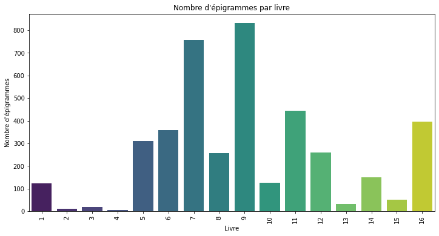
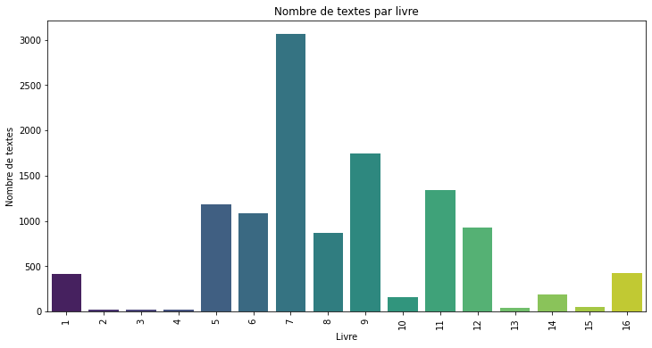
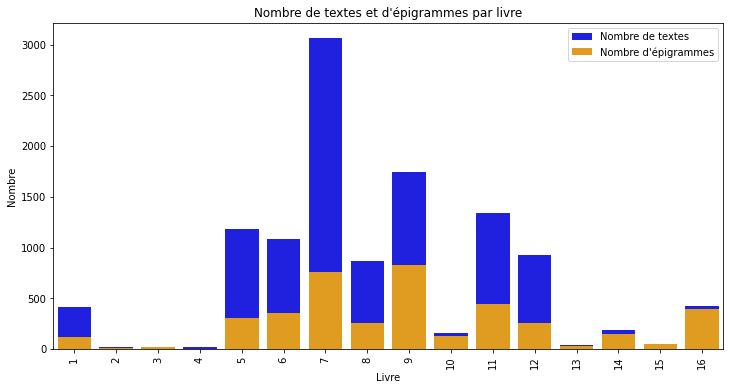
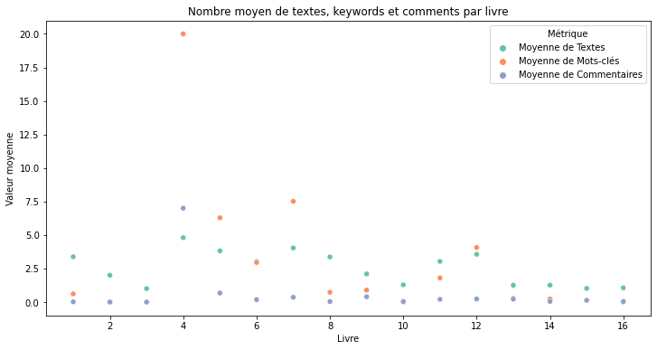
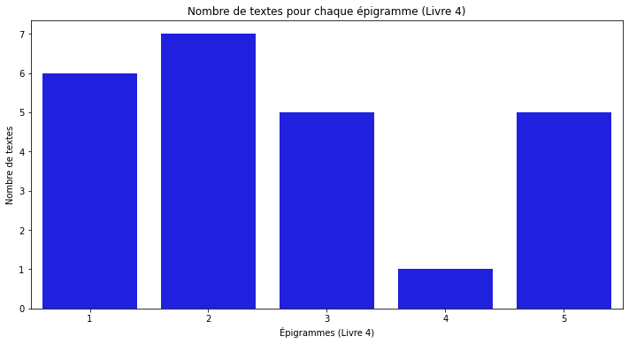
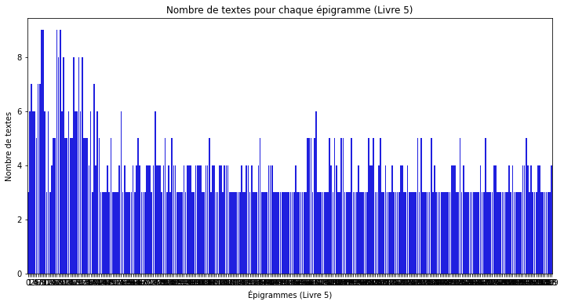
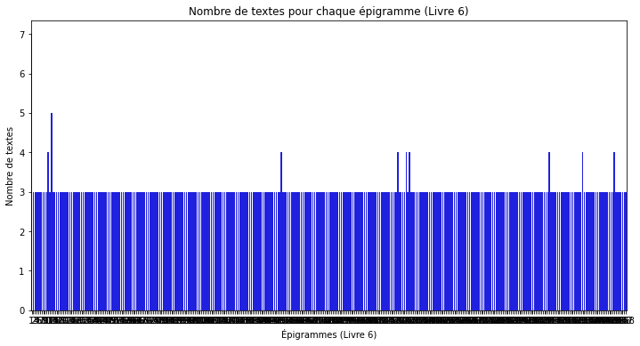
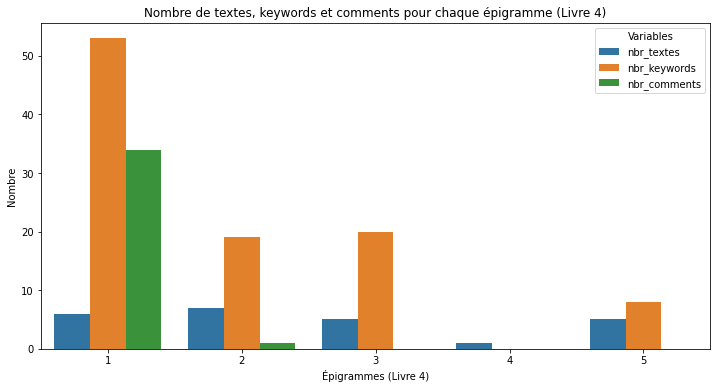
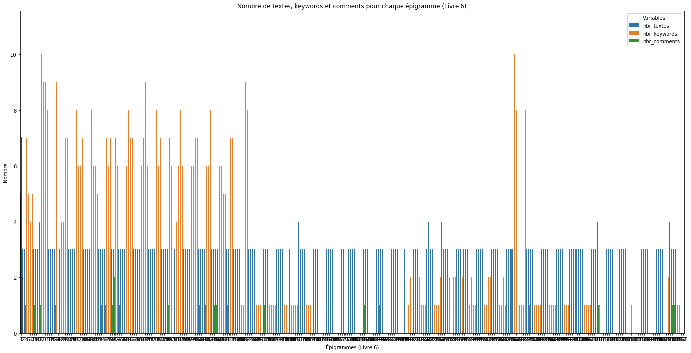

Seaborn#
Seaborn est une librairie de visualisation de données, basée sur matplotlib
Show code cell source
import json
import requests
import csv
import pandas as pd
import datetime
import seaborn as sns
import numpy as np
import matplotlib.pyplot as plt
Show code cell source
with open('dump_api.json','r') as f:
data = json.loads(f.read())
Compliquons notre dataframe. Nous voulons :
id
url
book
manuscrit (true or false si liste vide)
nombre de textes
une liste de dictionnaire (key = language ; value = nombre de textes pour cette langue)
liste des names en français
liste des cities en français
nombre de keywords
nombre de comments
Show code cell source
data_list = []
manuscrit_list = []
languages_count_list = []
names_fra_list = []
cities_fra_list = []
keywords_count_list = []
comments_count_list = []
for item in data:
books = item['book']
fragments = item['fragment']
texts = item['texts']
manuscripts = item['manuscripts']
authors = item['authors']
cities = item['cities']
keywords = item['keywords']
comments = item['comments']
# Vérifier si la liste de manuscrits est vide
manuscrit = len(manuscripts) > 0
# Compter le nombre de textes pour chaque langue
languages_count = {}
for text in texts:
language = text['language']
if language in languages_count:
languages_count[language] += 1
else:
languages_count[language] = 1
# Récupérer les noms en français
names_fra = [author['names'][2]['name'] for author in authors]
data_list.append({
'id': item['id'],
'url': item['url'],
'book': books['number'],
'fragment': item['fragment'],
'manuscrit': manuscrit,
'nbr_textes': len(texts),
'langues_count': languages_count,
'names_fra': names_fra,
'cities_fra': cities,
'nbr_keywords': len(keywords),
'nbr_comments': len(comments)
})
manuscrit_list.append(manuscrit)
languages_count_list.append(languages_count)
names_fra_list.append(names_fra)
cities_fra_list.append(cities)
keywords_count_list.append(len(keywords))
comments_count_list.append(len(comments))
df = pd.DataFrame(data_list)
df['manuscrit'] = manuscrit_list
df['langues_count'] = languages_count_list
df['names_fra'] = names_fra_list
df['cities_fra'] = cities_fra_list
df['nbr_keywords'] = keywords_count_list
df['nbr_comments'] = comments_count_list
pd.set_option('display.max_colwidth', None)
df
| id | url | book | fragment | manuscrit | nbr_textes | langues_count | names_fra | cities_fra | nbr_keywords | nbr_comments | |
|---|---|---|---|---|---|---|---|---|---|---|---|
| 0 | 424 | https://anthologiagraeca.org/api/passages/urn:cts:greekLit:tlg7000.tlg001.ag:1.1/ | 1 | 1 | True | 4 | {'grc': 1, 'eng': 1, 'fra': 1, 'por': 1} | [anonyme] | [] | 2 | 1 |
| 1 | 438 | https://anthologiagraeca.org/api/passages/urn:cts:greekLit:tlg7000.tlg001.ag:1.2/ | 1 | 2 | True | 4 | {'grc': 1, 'eng': 1, 'fra': 1, 'por': 1} | [anonyme] | [] | 2 | 0 |
| 2 | 513 | https://anthologiagraeca.org/api/passages/urn:cts:greekLit:tlg7000.tlg001.ag:1.3/ | 1 | 3 | True | 4 | {'grc': 1, 'eng': 1, 'fra': 1, 'por': 1} | [anonyme] | [] | 2 | 0 |
| 3 | 514 | https://anthologiagraeca.org/api/passages/urn:cts:greekLit:tlg7000.tlg001.ag:1.4/ | 1 | 4 | True | 4 | {'grc': 1, 'eng': 1, 'fra': 1, 'por': 1} | [anonyme] | [] | 2 | 0 |
| 4 | 515 | https://anthologiagraeca.org/api/passages/urn:cts:greekLit:tlg7000.tlg001.ag:1.5/ | 1 | 5 | True | 4 | {'grc': 1, 'eng': 1, 'fra': 1, 'por': 1} | [anonyme] | [] | 2 | 0 |
| ... | ... | ... | ... | ... | ... | ... | ... | ... | ... | ... | ... |
| 4129 | 3638 | https://anthologiagraeca.org/api/passages/urn:cts:greekLit:tlg7000.tlg001.ag:16.384/ | 16 | 384 | False | 2 | {'grc': 1, 'ita': 1} | [] | [] | 0 | 0 |
| 4130 | 3558 | https://anthologiagraeca.org/api/passages/urn:cts:greekLit:tlg7000.tlg001.ag:16.385/ | 16 | 385 | False | 2 | {'grc': 1, 'ita': 1} | [] | [] | 0 | 0 |
| 4131 | 4125 | https://anthologiagraeca.org/api/passages/urn:cts:greekLit:tlg7000.tlg001.ag:16.386/ | 16 | 386 | False | 2 | {'grc': 1, 'ita': 1} | [] | [] | 0 | 0 |
| 4132 | 3523 | https://anthologiagraeca.org/api/passages/urn:cts:greekLit:tlg7000.tlg001.ag:16.387/ | 16 | 387 | False | 2 | {'grc': 1, 'ita': 1} | [] | [] | 0 | 0 |
| 4133 | 3946 | https://anthologiagraeca.org/api/passages/urn:cts:greekLit:tlg7000.tlg001.ag:16.388/ | 16 | 388 | False | 2 | {'grc': 1, 'ita': 1} | [Julien l’Égyptien] | [] | 0 | 0 |
4134 rows × 11 columns
Nombre d’épigrammes et de textes par livre#
Show code cell source
import seaborn as sns
import matplotlib.pyplot as plt
# Compter le nombre d'épigrammes par texte
epigrammes_par_texte = df.groupby('book')['id'].count().reset_index()
# Trier les livres par nombre d'épigrammes décroissant
epigrammes_par_texte = epigrammes_par_texte.sort_values('id', ascending=False)
# Créer le plot
plt.figure(figsize=(12, 6))
sns.barplot(x='book', y='id', data=epigrammes_par_texte, palette='viridis')
plt.xlabel('Livre')
plt.ylabel('Nombre d\'épigrammes')
plt.title('Nombre d\'épigrammes par livre')
plt.xticks(rotation=90)
plt.show()

Show code cell source
# Compter le nombre de textes par livre
textes_par_livre = df.groupby('book')['nbr_textes'].sum().reset_index()
# Trier les livres par nombre de textes décroissant
textes_par_livre = textes_par_livre.sort_values('nbr_textes', ascending=False)
# Créer le plot
plt.figure(figsize=(12, 6))
sns.barplot(x='book', y='nbr_textes', data=textes_par_livre, palette='viridis')
plt.xlabel('Livre')
plt.ylabel('Nombre de textes')
plt.title('Nombre de textes par livre')
plt.xticks(rotation=90)
plt.show()

Show code cell source
import seaborn as sns
import matplotlib.pyplot as plt
# Compter le nombre de textes par livre
textes_par_livre = df.groupby('book')['nbr_textes'].sum().reset_index()
# Trier les livres par nombre de textes décroissant
textes_par_livre = textes_par_livre.sort_values('nbr_textes', ascending=False)
# Compter le nombre d'épigrammes par texte
epigrammes_par_texte = df.groupby('book')['id'].count().reset_index()
# Trier les livres par nombre d'épigrammes décroissant
epigrammes_par_texte = epigrammes_par_texte.sort_values('id', ascending=False)
# Créer le graphique
plt.figure(figsize=(12, 6))
# Plot des textes par livre
sns.barplot(x='book', y='nbr_textes', data=textes_par_livre, color='blue', label='Nombre de textes')
# Plot des épigrammes par texte
sns.barplot(x='book', y='id', data=epigrammes_par_texte, color='orange', label='Nombre d\'épigrammes')
plt.xlabel('Livre')
plt.ylabel('Nombre')
plt.title('Nombre de textes et d\'épigrammes par livre')
plt.xticks(rotation=90)
plt.legend()
# Afficher le graphique
plt.show()

Nombre moyen de textes, mots-clés, commentaires par livre#
Show code cell source
import seaborn as sns
import matplotlib.pyplot as plt
# Calculer le nombre moyen de textes, keywords et comments par livre
mean_textes = df.groupby('book')['nbr_textes'].mean().reset_index()
mean_keywords = df.groupby('book')['nbr_keywords'].mean().reset_index()
mean_comments = df.groupby('book')['nbr_comments'].mean().reset_index()
# Créer le DataFrame avec les données moyennes par livre
mean_data = mean_textes.merge(mean_keywords, on='book').merge(mean_comments, on='book')
mean_data = mean_data.rename(columns={'nbr_textes': 'Moyenne de Textes', 'nbr_keywords': 'Moyenne de Mots-clés', 'nbr_comments': 'Moyenne de Commentaires'})
# Préparer les données pour le plot
mean_data = mean_data.melt(id_vars='book', var_name='Metric', value_name='Mean Value')
# Créer le graphique avec des points de couleur différente pour chaque métrique
plt.figure(figsize=(12, 6))
sns.scatterplot(data=mean_data, x='book', y='Mean Value', hue='Metric', palette='Set2')
plt.xlabel('Livre')
plt.ylabel('Valeur moyenne')
plt.title('Nombre moyen de textes, keywords et comments par livre')
# Afficher la légende
plt.legend(title='Métrique')
# Afficher le graphique
plt.show()

Nombre de textes par épigramme dans un livre donné#
Show code cell source
import seaborn as sns
import matplotlib.pyplot as plt
# Filtrer les données pour le livre 4
data_livre_4 = df[df['book'] == 4]
# Compter le nombre de textes par épigramme
textes_par_epigramme = data_livre_4.groupby('fragment')['nbr_textes'].sum().reset_index()
# Trier les épigrammes par ID
textes_par_epigramme = textes_par_epigramme.sort_values('fragment')
# Créer le graphique
plt.figure(figsize=(12, 6))
sns.barplot(x='fragment', y='nbr_textes', data=textes_par_epigramme, color='blue')
plt.xlabel('Épigrammes (Livre 4)')
plt.ylabel('Nombre de textes')
plt.title('Nombre de textes pour chaque épigramme (Livre 4)')
# Afficher le graphique
plt.show()

Show code cell source
import seaborn as sns
import matplotlib.pyplot as plt
# Filtrer les données pour le livre 5
data_livre_5 = df[df['book'] == 5]
# Compter le nombre de textes par épigramme
textes_par_epigramme = data_livre_5.groupby('fragment')['nbr_textes'].sum().reset_index()
# Trier les épigrammes par ID
textes_par_epigramme = textes_par_epigramme.sort_values('fragment')
# Créer le graphique
plt.figure(figsize=(12, 6))
sns.barplot(x='fragment', y='nbr_textes', data=textes_par_epigramme, color='blue')
plt.xlabel('Épigrammes (Livre 5)')
plt.ylabel('Nombre de textes')
plt.title('Nombre de textes pour chaque épigramme (Livre 5)')
# Afficher le graphique
plt.show()

Show code cell source
import seaborn as sns
import matplotlib.pyplot as plt
# Filtrer les données pour le livre 6
data_livre_6 = df[df['book'] == 6]
# Compter le nombre de textes par épigramme
textes_par_epigramme = data_livre_6.groupby('fragment')['nbr_textes'].sum().reset_index()
# Trier les épigrammes par ID
textes_par_epigramme = textes_par_epigramme.sort_values('fragment')
# Créer le graphique
plt.figure(figsize=(12, 6))
sns.barplot(x='fragment', y='nbr_textes', data=textes_par_epigramme, color='blue')
plt.xlabel('Épigrammes (Livre 6)')
plt.ylabel('Nombre de textes')
plt.title('Nombre de textes pour chaque épigramme (Livre 6)')
# Afficher le graphique
plt.show()

Nombre de textes, mots-clés, commentaires par épigramme dans un livre donné#
Show code cell source
import seaborn as sns
import matplotlib.pyplot as plt
# Filtrer les données pour le livre 4
data_livre_4 = df[df['book'] == 4]
# Sélectionner les colonnes pertinentes
data_livre_4 = data_livre_4[['fragment', 'nbr_textes', 'nbr_keywords', 'nbr_comments']]
# Melt les données pour le stacked histogram
data_livre_4_melted = data_livre_4.melt(id_vars='fragment', var_name='Variable', value_name='Nombre')
# Créer le graphique
plt.figure(figsize=(12, 6))
sns.barplot(x='fragment', y='Nombre', hue='Variable', data=data_livre_4_melted)
plt.xlabel('Épigrammes (Livre 4)')
plt.ylabel('Nombre')
plt.title('Nombre de textes, keywords et comments pour chaque épigramme (Livre 4)')
plt.legend(title='Variables')
# Afficher le graphique
plt.show()

Show code cell source
import seaborn as sns
import matplotlib.pyplot as plt
# Filtrer les données pour le livre 6
data_livre_6 = df[df['book'] == 6]
# Sélectionner les colonnes pertinentes
data_livre_6 = data_livre_6[['fragment', 'nbr_textes', 'nbr_keywords', 'nbr_comments']]
# Melt les données pour le stacked histogram
data_livre_6_melted = data_livre_6.melt(id_vars='fragment', var_name='Variable', value_name='Nombre')
# Créer le graphique
plt.figure(figsize=(24, 12))
sns.barplot(x='fragment', y='Nombre', hue='Variable', data=data_livre_6_melted)
plt.xlabel('Épigrammes (Livre 6)')
plt.ylabel('Nombre')
plt.title('Nombre de textes, keywords et comments pour chaque épigramme (Livre 6)')
plt.legend(title='Variables')
# Afficher le graphique
plt.show()

Vers l’épigramme parfaite : nombre (groupés) de mots-clés par livre#
Show code cell source
meskw = []
for i in range(len(data)):
livre_ = data[i]['book']['number']
count_ = len([i for i in data[i]['keywords']])
url_ = data[i]['url']
meskw.append({'book':livre_,'count':count_, 'url':url_})
meskw_df = pd.DataFrame(meskw)
meskw_df
| book | count | url | |
|---|---|---|---|
| 0 | 1 | 2 | https://anthologiagraeca.org/api/passages/urn:cts:greekLit:tlg7000.tlg001.ag:1.1/ |
| 1 | 1 | 2 | https://anthologiagraeca.org/api/passages/urn:cts:greekLit:tlg7000.tlg001.ag:1.2/ |
| 2 | 1 | 2 | https://anthologiagraeca.org/api/passages/urn:cts:greekLit:tlg7000.tlg001.ag:1.3/ |
| 3 | 1 | 2 | https://anthologiagraeca.org/api/passages/urn:cts:greekLit:tlg7000.tlg001.ag:1.4/ |
| 4 | 1 | 2 | https://anthologiagraeca.org/api/passages/urn:cts:greekLit:tlg7000.tlg001.ag:1.5/ |
| ... | ... | ... | ... |
| 4129 | 16 | 0 | https://anthologiagraeca.org/api/passages/urn:cts:greekLit:tlg7000.tlg001.ag:16.384/ |
| 4130 | 16 | 0 | https://anthologiagraeca.org/api/passages/urn:cts:greekLit:tlg7000.tlg001.ag:16.385/ |
| 4131 | 16 | 0 | https://anthologiagraeca.org/api/passages/urn:cts:greekLit:tlg7000.tlg001.ag:16.386/ |
| 4132 | 16 | 0 | https://anthologiagraeca.org/api/passages/urn:cts:greekLit:tlg7000.tlg001.ag:16.387/ |
| 4133 | 16 | 0 | https://anthologiagraeca.org/api/passages/urn:cts:greekLit:tlg7000.tlg001.ag:16.388/ |
4134 rows × 3 columns
Show code cell source
def data_to_df(df):
index = [0,1,2,5,10,60]
mycounts = pd.cut(df['count'], index, right=False, labels=["0","1","2-4","5-9","10-59"]).value_counts() # cut les intervalles du df selon les valeurs de la liste + les compte
mondict = mycounts.to_dict()
mondict['book'] = df['book'].values[0]
return pd.Series(mondict).to_frame().T
dict_list = meskw_df.groupby('book',as_index=False).apply(data_to_df)
dict_list
| 0 | 2-4 | 1 | 5-9 | 10-59 | book | ||
|---|---|---|---|---|---|---|---|
| 0 | 0 | 85 | 36 | 2 | 0 | 0 | 1 |
| 1 | 0 | 10 | 0 | 0 | 0 | 0 | 2 |
| 2 | 0 | 19 | 0 | 0 | 0 | 0 | 3 |
| 3 | 0 | 1 | 0 | 0 | 1 | 3 | 4 |
| 4 | 0 | 0 | 80 | 1 | 213 | 16 | 5 |
| 5 | 0 | 82 | 26 | 127 | 119 | 5 | 6 |
| 6 | 0 | 2 | 23 | 0 | 627 | 106 | 7 |
| 7 | 0 | 221 | 12 | 9 | 9 | 7 | 8 |
| 8 | 0 | 445 | 160 | 206 | 18 | 2 | 9 |
| 9 | 0 | 127 | 0 | 0 | 0 | 0 | 10 |
| 10 | 0 | 323 | 12 | 2 | 100 | 6 | 11 |
| 11 | 0 | 0 | 228 | 1 | 30 | 1 | 12 |
| 12 | 0 | 29 | 1 | 1 | 1 | 0 | 13 |
| 13 | 0 | 120 | 2 | 29 | 0 | 0 | 14 |
| 14 | 0 | 49 | 3 | 0 | 0 | 0 | 15 |
| 15 | 0 | 396 | 0 | 0 | 0 | 0 | 16 |
Show code cell source
count_df = dict_list.reset_index(drop=True)
count_df = count_df.set_index('book') # définit l'index du df sur book
count_df_ = count_df[["0","1","2-4","5-9","10-59"][::-1]] # met les y dans l'ordre
plt.figure(dpi=125,figsize=(8,5))
plt.title("Nombre d'épigrammes qui ont X mots-clés par livre")
sns.heatmap(count_df_.T,annot=True,fmt='d') # .T = affiche les étiquettes dans le bon sens ; annot = affiche les valeurs (d=entiers) ;
<AxesSubplot:title={'center':"Nombre d'épigrammes qui ont X mots-clés par livre"}, xlabel='book'>